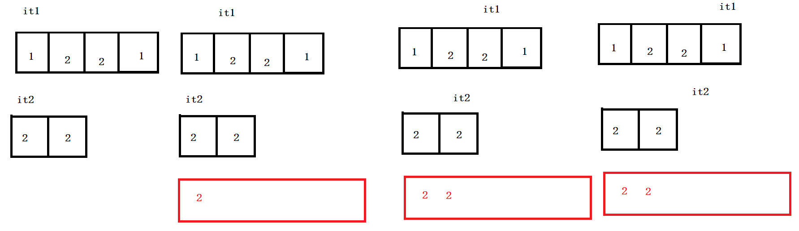
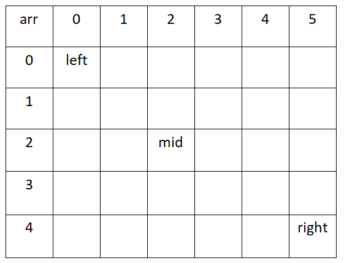

题目-两个数组的交集
LeetCode349
给定两个数组，编写一个函数来计算它们的交集。
实例：
输入：nums1 = [4,9,5], nums2 = [9,4,9,8,4]
输出：[9,4]
分析
借助示例
输入：nums1 = [1,2,2,1], nums2 = [2,2]
输出：[2]
分析结果如下图：
两个迭代器指针从头开始比较，
- 若不相等，小得就是差异集合，然后小的向后走一步；
- 若相等，就是交集的成员，两个指针一起向后走。
- 红色框表示自己的vector，用来存放需要返回的交集。

参考解法
class Solution {
public:
vector<int> intersection(vector<int>& nums1, vector<int>& nums2) {
set<int> s1;
for(auto e: nums1)
s1.insert(e);//s1 set
set<int> s2;
for(auto e: nums2)
s2.insert(e); //s2 set
vector<int> vRet;//存放返回数组
auto it1 = s1.begin();
auto it2 = s2.begin();
while(it1 != s1.end() && it2 != s2.end()){
if(*it1 < *it2)
it1++;
else if(*it1 > *it2)
it2++;
else
{
vRet.push_back(*it2);
it1++;
it2++;
}
}
return vRet;
}
};
题目-合并两个有序数组
LeetCode88
直接合并+排序
class Solution {
public:
void merge(vector<int>& nums1, int m, vector<int>& nums2, int n) {
for (int i = 0; i != n; ++i) {
nums1[m + i] = nums2[i];
}
sort(nums1.begin(), nums1.end());
}
};
双指针
- 利用已知数组已经排序性质完成下列问题
class Solution {
public:
void merge(vector<int>& nums1, int m, vector<int>& nums2, int n) {
int p1 = 0;
int p2 = 0;
int sorted[m+n];
int cur; //记录当前值，用于插入sorted数组中
while(p1 < m || p2 < n)
{
if(p1 == m) //排完nums1
{
cur = nums2[p2++];
}
else if(p2 == n)
{
cur = nums1[p1++];
}
else if(nums1[p1] < nums2[p2])
{
cur = nums1[p1++];
}
else
{
cur = nums2[p2++];
}
sorted[p1+p2-1] = cur;
}
for(int i = 0; i != m+n; ++i)
{
nums1[i] = sorted[i];
}
}
};
题目-有序数组的平方
977
排序
class Solution {
public:
vector<int> sortedSquares(vector<int>& nums) {
vector<int> ans;
for (int num: nums) {
ans.push_back(num * num);
}
sort(ans.begin(), ans.end());
return ans;
}
};
双指针
作者：LeetCode-Solution 链接：https://leetcode-cn.com/problems/squares-of-a-sorted-array/solution/you-xu-shu-zu-de-ping-fang-by-leetcode-solution/ 来源：力扣（LeetCode） 著作权归作者所有。商业转载请联系作者获得授权，非商业转载请注明出处。
class Solution {
public:
vector<int> sortedSquares(vector<int>& nums) {
int n = nums.size();
int negative = -1;
for (int i = 0; i < n; ++i) {
if (nums[i] < 0) {
negative = i;
} else {
break;
}
}
vector<int> ans;
int i = negative, j = negative + 1;
while (i >= 0 || j < n) {
if (i < 0) {
ans.push_back(nums[j] * nums[j]);
++j;
}
else if (j == n) {
ans.push_back(nums[i] * nums[i]);
--i;
}
else if (nums[i] * nums[i] < nums[j] * nums[j]) {
ans.push_back(nums[i] * nums[i]);
--i;
}
else {
ans.push_back(nums[j] * nums[j]);
++j;
}
}
return ans;
}
};
双指针
同样地，我们可以使用两个指针分别指向位置 00 和 n-1n−1，每次比较两个指针对应的数，选择较大的那个逆序放入答案并移动指针。这种方法无需处理某一指针移动至边界的情况，读者可以仔细思考其精髓所在。
class Solution {
public:
vector<int> sortedSquares(vector<int>& nums) {
int n = nums.size();
vector<int> ans(n);
for (int i = 0, j = n - 1, pos = n - 1; i <= j;) {
if (nums[i] * nums[i] > nums[j] * nums[j]) {
ans[pos] = nums[i] * nums[i];
++i;
}
else {
ans[pos] = nums[j] * nums[j];
--j;
}
--pos;
}
return ans;
}
};
作者：LeetCode-Solution 链接：https://leetcode-cn.com/problems/squares-of-a-sorted-array/solution/you-xu-shu-zu-de-ping-fang-by-leetcode-solution/ 来源：力扣（LeetCode） 著作权归作者所有。商业转载请联系作者获得授权，非商业转载请注明出处。
题一
在一个二维数组array中（每个一维数组的长度相同），每一行都按照从左到右递增的顺序排序，每一列都按照从上到下递增的顺序排序。请完成一个函数，输入这样的一个二维数组和一个整数，判断数组中是否含有该整数。
[
[1,2,8,9], [2,4,9,12], [4,7,10,13], [6,8,11,15]
]
给定 target = 7，返回 true。
给定 target = 3，返回 false。
暴力遍历法
class Solution {
public:
bool Find(int target, vector<vector<int> > array) {
//暴力遍历
if(array.size() == 0 || array[0].size() == 0)
return false;
for(const auto& vec : array){
for(const auto& val : vec){
if(val == target)
return true;
}
}
return false;//未找到
}
};
二分法
参考一维数组二分法思路，假设对于二维数组也成立。

判断target和mid位置数字大小，作比较。
查找的过程本质就是排除过程，谁排除多，选谁。
class Solution {
public:
// 二分法搜索
bool BinarySearch(vector<int> arr,int target)
{
int left = 0,right = arr.size()-1;
//[left,right]
while(left <= right)
{
int mid = left + ((right-left)>>1);
if(arr[mid] == target)
return true;
else if(arr[mid] < target)
left = mid + 1; //右边找
else
right = mid - 1; //左边找
}
return false;
}
bool Find(int target, vector<vector<int> > array)
{
//解法二：二分法解答过程
for(auto e : array)
{
if(BinarySearch(e, target)) return true;
}
return false;
}
};
思路参考代码
| arr | 0 | 1 | 2 | 3 | 4 | 5 |
|---|---|---|---|---|---|---|
| 0 | val | |||||
| 1 | ||||||
| 2 | ||||||
| 3 | ||||||
| 4 |
其中val左边的小于val，val下边的大于val，比较规则如下
- 若target > val ，表明target在更大位置，所以行加一，向下移动查询
- 若target < val ，表明target在更小位置，所以列减一，向左移动查询
class Solution {
public:
bool Find(int target, vector<vector<int> > array) {
int i = 0;
int j = array[0].size() - 1;//第一行最右元素，表示第一行最大元素
while(i < array.size() && j >= 0){
if(target < array[i][j]) //array[i][j]为当前行最大，当前列最小
j--;//列前移
else if(target > array[i][j])
i++; //行下移动
else
return true;
}
return false;
}
};
复杂度分析：
其中时间复杂度：O(m+n),对应于m行，n列的移动次数
空间复杂度为1，因为使用一个变量val
题二 旋转数组的最小数字
把一个数组最开始的若干个元素搬到数组的末尾，我们称之为数组的旋转。 输入一个非递减排序的数组的一个旋 转，输出旋转数组的最小元素。
例如数组{3,4,5,1,2}为{1,2,3,4,5}的一个旋转，该数组的最小值为1。
NOTE：给出的所有元素都大于0，若数组大小为0，请返回0。
暴力解法
强行遍历数组，找出最小值。没有用到题目已给的含义，非降序，旋转等关键字。
class Solution {
public:
int minNumberInRotateArray(vector<int> rotateArray) {
//暴力解法
int val = rotateArray[0];
for(const auto& arr : rotateArray){
if(arr < val)
val = arr;
}
return val;
}
};
class Solution {
public:
int minNumberInRotateArray(vector<int> rotateArray) {
//暴力解法
if(rotateArray.empty()) return 0;
for(int i = 0; i < rotateArray.size()-1; i++){
if(rotateArray[i] > rotateArray[i+1])
return rotateArray[i+1];
}
return rotateArray[0];
}
};
二分查找

因为数组非递减，旋转后分为两部分，左半部分非递减，有半部分非递减。并且，前半部分整体大于后半部分。所以掌握此规律，继续查找，定义left指向最左侧，right指向最右侧，mid指向中间位置。若：
- arr[mid] >= arr[left] 说明mid位置在原数组前半部分，进一步说明，目标最小值，在mid的右侧，让left=mid
- arr[mid] < arr[left] 说明mid位置在原数组后半部分，进一步说明，目标最小值，在mid的左侧，让right=mid
参考代码：
class Solution {
public:
int minNumberInRotateArray(vector<int> rotateArray) {
//二分法
if(rotateArray.empty()) return 0;
int left = 0;
int right = rotateArray.size() - 1;
int mid = 0;
while(rotateArray[left] >= rotateArray[right]){
if(right - left == 1){ //表明左右两数相邻
mid = right;
break;
}
mid = left + ((right - left) >> 1);
//无法判断目标在mid左侧还是右侧
if(rotateArray[mid] == rotateArray[left] &&
rotateArray[right] == rotateArray[left]){
int res = rotateArray[left];
for(int i = left+1; i<right; i++){
if(res > rotateArray[i])
res = rotateArray[i];
}
return res;
}
//判断来自左边还是右边
if(rotateArray[mid] >= rotateArray[left]) //mid在左半部分
left = mid;
else //mid在有半部分
right = mid;
}//end of while
return rotateArray[mid];
}
};
题三 调整数组顺序使奇数位位于偶数位前面
辅助数组
class Solution {
public:
void reOrderArray(vector<int> &array) {
//辅助数组 空间
vector<int> vec;
for(const int& v : array){
if(v & 1) vec.push_back(v);//将奇数插入vec中
}
for(const int& v: array){
if(!(v & 1)) vec.push_back(v);//后面继续插入vec中
}
//将vec拷贝到array
copy(vec.begin(), vec.end(), array.begin());
}
};
思路
in-place
使用插入排序的思想，但是我觉得这个代码有点缺陷。
class Solution {
public:
void reOrderArray(vector<int> &array) {
//插入排序思路
int k = 0;//标记奇数下标位置
for(int i = 0; i < array.size(); i++){
if((array[i] & 1) == 1){ //奇数
int temp = array[i]; //记录此数
int j = i; //记录奇数位置的下标
while(j > k){
array[j] = array[j-1]; // 将奇数前面的偶数移动
j--;
}
array[k++] = temp;
}
}
}
};
class Solution {
public:
void reOrderArray(vector<int> &array) {
int i = 0;
for (int j=0; j<array.size(); ++j) {
if (array[j]&1) {
int tmp = array[j];
for (int k=j-1; k>=i; --k) {
array[k+1] = array[k];
}
array[i++] = tmp;
}
}
}
};